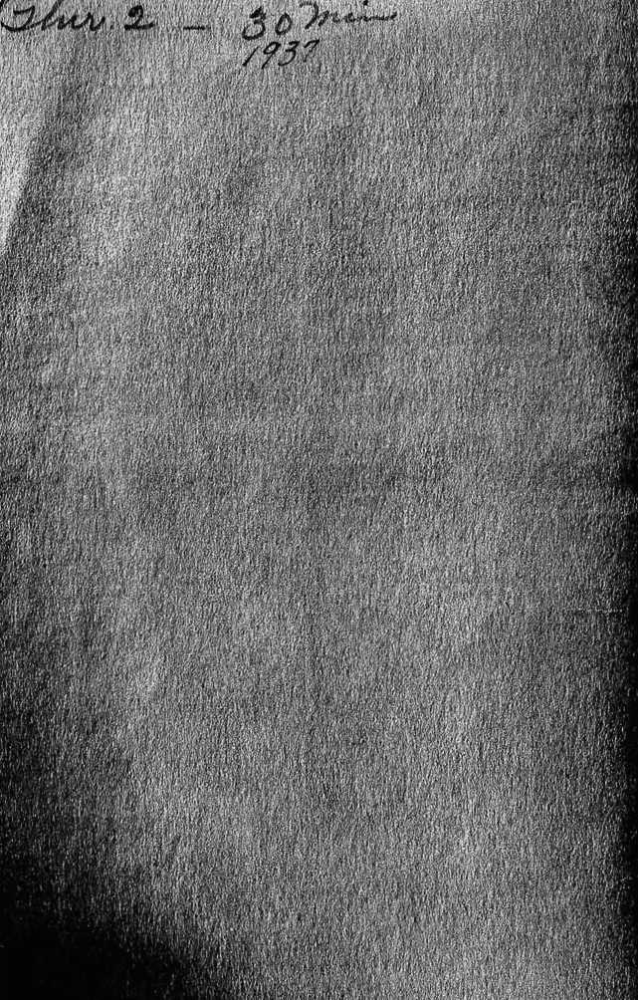
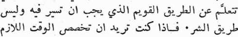
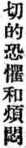
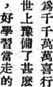
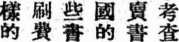
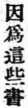
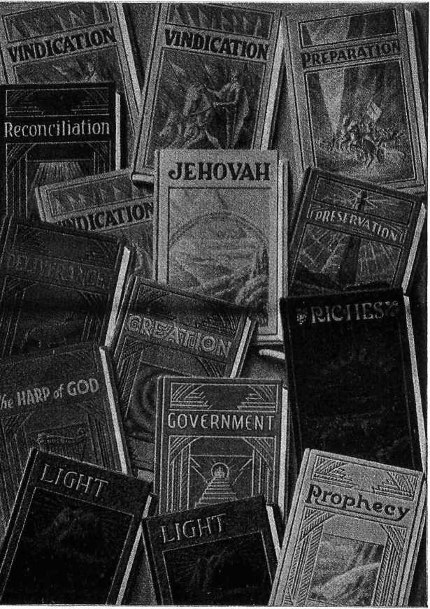
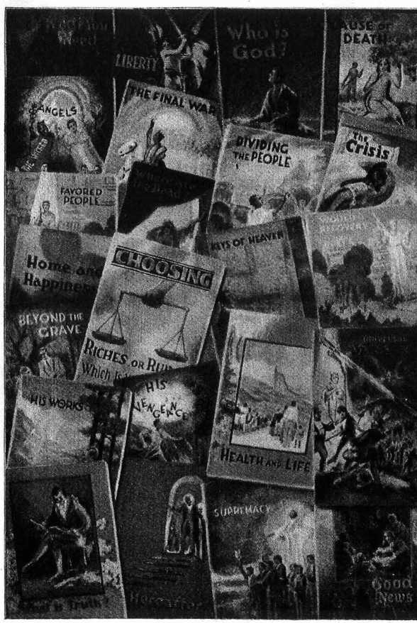

INTRODUCING
WATCHTOWER
BIBLE AND TRACT SOCIETY, INC. International Bible Students Association Brooklyn, N. Y., U.S.A.
MADE IN THE UNITED STATES OF AMERICA
What provision on earth has God made for the millions of men and women who want to do right? You will desire to know, so that you may learn the right way to go, not some human scheme. If you are willing to devote the necessary time to read these Bible study helps, you will gain such desirable knowledge, also courage, and peace of mind, because these books contain, not the opinion of a man, but the truth from the Word of God. I am not selling books, but using them to bring good news of God’s kingdom to you. Take these books, and by making a small contribution you will make it possible for like books to be put in the hands of others.
In the English language there are the following books, and these can each be had on a 25c contribution:
|
Riches |
ch |
Light Book 2 |
lt-2 | ||
|
Jehovah Preparation Preservation Vindication Book 1 Vindication Book 2 Vindication Book 3 Light Book 1 |
jh PP pr v-1 v-2 v-3 Lt-1 |
Prophecy Government Reconciliation Creation Deliverance Harp |
P |
go |
r c d h |
|
The following booklets can be had on a contribution of 5c each; 6 for 25c: Armageddon ar Dividing the People Uncovered co Escape to the Kingdom Protection pt The Crisis Choosing eg Who Is God? Government-Hiding What Is Truth? the Truth: Why? gm Cause of Death Universal War Near wn Hereafter Favored People fa Good News Supremacy su Liberty His Vengeance vn The Final War Angels an What You Need Righteous Ruler rl Health and Life World Recovery wo Home and Happiness Beyond the Grave bg Keys of Heaven His Works hs Where Are the Dead? Intolerance in |
dv sk cs gd tu de at nw lb fw nd le ho ke wd | ||||
|
Watchtower (semimonthly) magazine, $1.00 a year. Golden Age (biweekly) magazine, $1.00 a year. If you want your friends in other countries to get some literature, see Branch address on page 32, | |||||
Watter voorsiening op die aarde het God gemaak vir die millioene van mense wat reg wil doen? U sal dit wil weet sodat u die regte weg kan leer te volg, en nie enige menslike idee nie. As u gewillig is om die nodige tyd daaraan te bestee om hierdie Bybelstudie helpmiddes te lees sal us die wenslike kennis verkry, en ook moed en vrede van hart, want hierdie boeke bevat nie maar net die mening van ’n mens nie, maar die waar-heid van Gods Woord. Ik verkoop nie boeke nie, maar gebruik hulle om u die goeie nuns van Gods Koninkryk te bring. Neem hierdie boeke, en deur ’n kleine bydrae te maak sal u dit moontlik maak om gelyke boeke in die hande van ander te plaas.
In die Afrikaanse taal Is daar die volgende boeke en u kan hulle verkry op bydrae van 25c ieder:
Die volgende brosjures kan 5c vlr een; 25c vir 6:
Beskerming pt
Keuse eg
Regering-Huile Verberg
die Waarheid : Waarom? gm Wêreldwye Oorlog Naby wn
Engeie an
Vlug Hit na die Koninkryk sk
Die Krisis cs
|
Rykdom |
ch |
Lig, Boek 2 |
lt-2 |
|
Jehova |
jh |
Lewe |
II |
|
Voorbereiding |
PP |
Verlossing |
d |
|
Regverdiging 1 |
v-1 |
Die Harp van God |
h |
|
Lig, Boek 1 |
Lt-1 |
verkry word op bydrae van
As u wil hê dat u vriende in ander lande enig literatuur moet kry, kyk die takkantore se addresse op bladsy 32.
tLjJlj Jle>-JI (Jp a-*pl (^jJI l«
Jd <±US A3j*j> JL. dl>‘l ys> U J*9 jJUJl
^^-kill >—A .^11 ^jj»I J* U JI °’^4j
|
(»y—li j |
4pk>uiJ 1 (\p 5 4j1—*iJ 43 ^juL\ oAj£> (J*^2T>c |
■j dVlj |
|
3-J. |
<jl-.M>> <_£^ J C^* 1 o-k^> L—JaM |
tJl2JI |
|
lilJI JJi>'^S<J o-J VI *<uj1 <^jV | ||
|
IpdUY IftAixS «ij| oXu <>-,/>» |
• tij | |
|
2J Cx^ L$X1« (3«>cj |
r -Ue> J | |
|
L^le utldCoJ <JUI u-^5Jl <*> AiiJl j | ||
|
6C -’^J c’.^’. |
tile ^.T» | |
|
c |
^Ai-I ch | |
|
d |
pr |
<GJ) |
|
h |
ojIjLill go |
<• Jl-I |
|
r |
Uui | |
|
I—^’c JjvJ-l uil53> <JI—xl) jl3<J|j 4__1__-b-l_ylJ Oji-» (j—»>u de | ||
|
: AP-JJ IxXjj | ||
|
cs |
<•5^/1 an |
&’ Mil |
|
kw |
(JU) oj&ll dv <_«iJl J | |
|
wd |
V-J5-' (^ «>.' sk o^UI JI |
-^1 |
|
Jp |
o^l> jr\P dl>l>^l (J-^>«. (jl Jj j c~5" |
IS'. |
|
cs^ |
£ JJI jlyp Ji) l9 ClipjJall o-U (Jai |
JI |
W A>=jU
U,umnl.iu& puiiibp i^wmpiuuuiui^ £ ifi[in^in-
lup m p rf.ui p m rf.ui in UJjfibpnL. Iil Ifp'jibpni. ^unl’uip: UJb-fULftn iif^iinp iptui^iuippp tfpirfbiuf uiju ^wptj^ tifui-Uiiun^ui'iip , npuf^u ifp ffflLp Ulf ipui pbbiuip nLifJirf ^uitf -pipb puifbf u,lPl[[,fi n£ {^!» if m p rflfui j pbi ^UJjbrjnrfnL-pbwb ifp ^buibL^if : jtuii&ii Lunb^p ufi^inp brjuib
J unf m^imlfp uiuif U • f)'[,[1<Pp ufuipifuipiubrirf uui <U1-mnpbibpp IfuiptfuifiiL tf.riL.p ufpinp t&bnp Aifl^p wjff-Iplll IplljpL f[l If^UlULP^lLbp t [pbfuf^U limbi. ^UijptLp^Li Ll ifuipp p/mrfuirfni pi [uJi • pm*bifp uiju tfppbpnt.*b ufiu-pu lAiiii if ncpf pi'll p ifuiptfUL ifp rfuirfui^iuipp ♦ ^mufuj U.uinnLbnj tfloiipp'b &fif mpmni-p}p^bpi Ifu n f ’tbP’P Ijp. fruijublf , ^uiufui ifppbpni. ifp^npmt. U,uuinLbnj pJm-IfUlLUpnLpbuib flUlflp fflL.pp Ablfp if fl pbpblP : lkju HP.phpp uinhbfni[_ bi. ipnpppif buL^p if'ptibfni£ rj.nL.p piumwpiulffjib orpiuib ufpinp pffiup np &£iftupinnt--P^b^C. ,Puirt,"l m-lbt. uitjpf.uijpiiiibp uif nL^bbuib uijuufpup pui^uifbpmifuiii tf p.php bi. if ppn8
^buiblItuif Z'Uijbptfi
i-b^riL m^tblftup I^Pff 25 u^iip tnm^ni^.
puff ^buibtlruif r^ppnjIflshpp npnip l^p^uup nt.—
iib^uup tT ^minpb ^euiTutp [>pp lini-£p § u^p^ bt. t[b'£| ^ujuip ^uttfuip Ulf 25 u^p uiuifni^*
cs
iwbbrnM, fujmiwc pf
074W'fl/77A/Wt,Z?, 6P8UC kw
MiSPUM*, IMUSfiM+M, Ifuij ynpflpus eg
PLbpb^ limbi. ^PSlfPlVbP rniinumiT p 16 ^"3 rniturn-^ pbpP tfpt np 16 mmppitbp^ [“f^'P piumuipuifft^ 4ntfbi.np bt. uitintf^uiuftuuiffmTi pbmfip joifnt-mb’hbp^ mmpbf^uih pm<f-— ifjlUljQ i 4 urnpupi Uptnmum^tfmil tf.miint.mb-
tfL-p ITmuiim&[it.ffbpnL. 4muy^itbpni.it ^mifmp mbu 32—£ t
Jake opatfeni ucinil Buh pro miliony muzu a zen na zemi, kteri si přeji jednati po pravu? Prejete si jiste vysvětlení, abyste mohl kráčeti po prave ceste a nikoli ve stopách lidi. Jste-li odhodlan venovati potřebný cas studiu techto biblickych pomucek, pak naleznete jiste zadouei poznani, odvahu a klid srdee; nebot’ tyto knihy neobsahuji lidske nazory, nybrž pravdu bozskeho Slova. Nepfichazim, abyeh prodavdl knihy, nybrž používám techto spish, abyeh Vam přinesl radostnou zvest o kralovstvi Bozfm. Prijmete ji; malym prispevkem nam umoznite, aby podobne knihy byly vlozeny i do rukou jinyeh lidi.
Mame na skladS nasledujfcf knihy v reci ceske, ktere mozno obdrzeti za prispevek 25c:
Bohatstvi Proroctvi Vlada
ch Smifeni p Stvoreni
go Harfa Bozi
Nasledujfcf brozury mo2no obdrzeti za prispevek 5c,
6 brozur za prispevek 25c:
Casopis Strážní Věž $1.50 roeng
Casopis Zlatý Věk 75c roční
Prejete-li si, aby Vasim pf^telfim v cizozemf byla zaslana literatura, obrat’te se lask. na adresy filialek, udane na stranS 32.
6 CHINESE
JB’J A
£ 75
bl
zb zb
ft
ft =f-
* M
{O' Jfj ° :&
» a ft IS
Bt ® A ±
ft. & & &
%
W
fU
4H
^n jfc ±
H8
ffi W >F
§ » T J: * ft
l?J f |J ® 10 rp
& > > AT W IH W ° f® JU fa > &
o
*
1® A
» ? it
>b m
5? *£f- ng j® as
W PP Ch
£T+r^zb> > , AAffiili
|
eg |
ek | ||
|
gm |
ft® |
cs | |
|
^WMAMT |
wn |
±^-WW#§g |
kw |
|
an |
? |
tu | |
|
ri |
IfWi^r ? |
wh | |
|
^iJSR |
dv |
A'^MW |
ho |
’ ^5033®
Sta je sve pripremio Bog za milijone Ijudi i zena na zemlji koji zele ciniti pravo? Vasa je zelja da to saznate, da naueite pravi put kojim treba da slijedite, a ne da podjete kojim Ijudskim tragom. Velite li pokloniti potrebno vrijeme da proeitate ove biblijske studije, doci cete ne samo do spoznanja za kojim tezite, vec i do hrabrosti i do dusevnog mira, jer te knjie ne sadrzavaju misljenje covjeka, vee istinu Rijeei Bozje. Ne dolazim da Vam prodam te knjige, vee ih upotrebljavam da Vam donesem radosnu vijest o Kraljevstvu Bozjem. Uzmite ih; a sa malim prilogom omo-gudit cete da se sliene knjige donesu i drugim Ijudima.
Na hrvatskom jeziku mogu se dobiti ove knjige i po ovoj cijeni—25c each:
Bogatstvo ch Stvaranje c
Harfa Bozja h
Nize navedene brosure mogu se dobiti uz cijenu od: (5c each—6 for 25c)
Andjeli
Sveopci rat blizu
Velite li, da i Vasi prijatelji u inostranstvu prime tu literaturu, upozoravamo Vas na naslove podruznica na strani 32. .
Hvilke Foranstaltninger har Gud truffet for de Mil-lioner af Maend og Kvinder paa Jorden, som onsker at gore det rette? De vil onske at vide Besked hermed, for at De kan Isere at vandre den rette Vej og ikke folge menneskelige Planer. Saafremt De er rede til at give den nodvendige Tid til at Isese disse Hjaelpemidler til Bibel-studium, vil De opnaa den onskede Kundskab og fatte Mod og faa Fred i Sindet, the disse Boger indeholder ikke et Menneskes Mening, men Sandheden fra Guds Ord. Jeg sælger ikke Boger, men benytter dem som et Middel til at bringe Dem det glaedelige Budskab om Guds Rige. Tag imod disse Boger, og ved at yde et lille Bidrag hjaelper De andre til at faa lignende Boger i Haende.
Paa Dansk findes folgende Bøger, der hver isser kan faas
|
mod et Bidrag paa 25c: Rigdom ch Jehova jh Krigens Forberedelse pp Beskyttelse pr Det store Opgør 1 v-1 Det store Opgor 2 v-2 Det store Opgør 3 v-3 |
Lys 1 Lys 2 Profetlerne Fremtidens Regerlng Forllgelse Skabelsen Verdensbefrlelsen Guds Harpe |
Lt-1 lt-2 P go r c d h | |
|
Folgende Småbøger kan faas for et Bidrag paa 5c Stykket, 6 Smaabpger for 25c: Afsløret co Riget—Verdens Haab kw Beskyttelse pt Hvem er Gud? gd Tag Standpunkt! eg Hvad er Sandhed? tu Engle an Efter D0den af En retfærdig Hersker ri Et godt Budskab nw Hinsldes Graven bg Frlhed lb Jehovas Skabervserk hs Den sidste Kamp fw Intolerance In Hvad De har behov nd Folkets Deling dv Hjem og Lykke ho Rednlng 1 Rlget sk Hvem skal regereVerden? wh Krisen cs | |||
|
Bladet Vagttaamet |
$1.50 |
Bladet Ny Verden |
$0.75 |
Ønsker De, at Deres Venner 1 andre Lande skal modtage vor Lltteratur, da findes Adresserne paa vore Afdelingskontorer paa Side 32.
Millise ettevalmistuse on Jumal teinud maa paal neile miljoneile meestele ja naistele, kes tahavad teha seda, mis on oige? Kindlasti tahate teie seda teada, selleks et voiksite oiget teed ja mitte mond inimlikku kava tund-ma oppida. Kui olete valmis piihendama tarvilist aega nende kasiraamatute lugemisele Piiblit uurides, siis saate seda soovitavat teadmist, ka julgust ja meelerahu, sest need raamatud sisaldavad mitte mone inimese arvamist, vaid Jumalasona tode. Ma ei muu raamatuid, vaid toon teile nende abil haid sonumeid Jumala kuningriigist. Votke need raamatud, ja annetades vaikese summa, voi-maldate ka teistele inimestele saada samaseid raamatuid.
Eesti keeles on saadaval jiirgmised raamatud, mida võib saada 25.c. annetuse eest eksemplar:
|
Rikkus |
ch |
Loomine |
c |
|
Valltsus |
go |
Vabastamine |
d |
|
Lepitus |
r |
Jumala kannel |
h |
võib saada 5.c. annetuse eest eksem-
Järgmised brošüürid plar; 6—25.c. eest:
tHemaailmlik s<5da liihedal wn
Inglid an
Kuningriik, maailma lootus kw
Mis on tode? tu
Pärast surma af
Kus viibivad surnud? wd
Teie valik eg
Kodu ja Onn ho
Kui soovite, et ka teie sobrad valismaal saaksld samaseid raamatuid, siis soovltage neile kirjutada iihingu osakonnale vastaval maal. Vaadake osakondade aadresse 32. lehekiiljel.
Mihin toimenpiteisiin Jumala,on ryhtynyt maan paalla niiden miljoonien miesten ja naisten hyvaksi, jotka tah-tovat tehda oikein? Te haluatte tietaa taman, jotta oppisitte tuntemaan oikean tien eika mitaan ihmisten suunnitelmia. Jos te olette halukkaat kayttamaan tar-peeksi aikaa naiden Raamatun tutkimisessa auttavien kirjojen lukemiseen, te saatte sen haluamanne tiedon seka rohkeutta ja mielenrauhaa, koska nama kirjat eivat sisalla ihmisen mielipiteita, vaan Jumalan sanassa ole-vaa totuutta. Mina en myy kirjoja, vaan kaytan niita tuodakseni teille Jumalan valtakunnan hyvia uutisia. Jos otatte nama kirjat ja annatte niista pienen korvauk-sen, niin te teette mahdolliseksi samanlaisten kirjojen jattamisen toisillekin. _
Suomeksl on saatavana seuraavat kirjat 25c. korvauk-
|
sella kpl.: | |||
|
Rikkaudet |
ch |
Ennustus |
p |
|
Valmistus |
PP |
Hallitus |
go |
|
Varjelus |
pr |
Elama. |
li |
|
Puolustus 1 kirja |
v-1 |
Sovitus |
r |
|
Puolustus 2 kirja |
v-2 |
Luominen |
c |
|
Puolustus 3 kirja |
v-3 |
Vapautus |
d |
|
Vaio 1 kirja |
Lt-1 |
Harppu |
h |
|
Vaio 2 kirja |
lt-2 | ||
|
Seuraavat kirjaset |
voidaan |
saada 5c. korvauksella kpl.; | |
|
6 kpl. 25c.: | |||
|
Turva |
pt |
Ratkaisu |
cs |
|
Valinta |
eg |
Valtakunta, maailman toivo |
kw |
|
Enkelit |
an |
Taman jftlkeen |
af |
|
Vanhurskas Hallltslja |
ri |
Hyvft uutinen |
nw |
|
Maailman toipumlnen |
wo |
Vilmeinen sota |
fw |
|
Suvaitsemattomuus |
in |
Koti ja onni |
ho |
|
Kansojen jakaminen |
dv |
Missii ovat kuolleet? |
■wd |
|
Pelastus valtakuntaan |
sk |
Kuuliaisuus |
lo |
Vartiotorni (aikakauslehti), $1.50 vuosikerta.
Kultainen Aika (aikakauslehti), $1.00 vuosikerta.
Jos tahdotte toisissa maissa olevien ystavlenne saavan tiitii klrjallisuutta, katsokaa haaratoimistojen osoitteita sivulta 32.
Quelle provision Dieu a fait pour ces millions d’hommes et de femmes sur la terre, qui desirent faire le bien ? Vous desirez eertainement savoir, afin d’apprendre h suivre le droit chemin et non pas des projets ruses des hommes. Si vous voulez bien consacrer le temps ndces-saire A lire ces aides pour 1’etude biblique, vous serez richement recompense par l’accroissement de la connais-sance d&ir6e, 1’encouragement et la vie paisible; car ces livres ne contiennent pas 1’opinion d’un homme, mais la vdrite de la Parole de Dieu. Je ne vends pas des livres, mais je les emploie pour vous apporter la bonne nouvelle du Royaume de Dieu. Servez vous de ces livres, et en donnant une petite contribution vous aiderez d’autres à se procurer cette litterature.
En frangais nous avons les livres suivants, que vous pouvez avoir pour une contribution de 25c chacun:
|
Richesses |
ch |
Vie |
II |
|
Justification, Vol. 1 |
v-1 |
Gouvernement |
go |
|
Justification, Vol. 2 |
v-2 |
Reconciliation |
r |
|
Lumière, Vol. 1 |
Lt-1 |
Creation |
c |
|
Lumière, Vol. 2 |
lt-2 |
Délivrance |
d |
|
Prophétie |
P |
La Harpe de Dieu |
h |
|
Jehovah |
jh |
Les brochures sulvantes vous pouvez avoir pour une contribution de 5c chacune, ou 6 pour 25e:
|
Choisissez |
eg |
Qui Est Dieu? |
fid |
|
Qui Est-ce qui Gouvernera |
Qu’est-ce que la Verlte? |
tu | |
|
le Monde? |
wh |
La Cause de la Mort |
de |
|
La Guerre Unlverselle |
Bonne Nouvelle |
nw | |
|
Est Proche |
wn |
Intolerance |
in |
|
Lea Anges |
an |
Le Classement des Humains |
dv |
|
Le Juste Souvepain |
ri |
Le Royaume un Refuge |
sk |
|
La Relfevement du Monde |
Liberte |
lb | |
|
Est-il Possible? |
wo |
Le Combat Final |
fw |
|
Gouvernement |
gm |
Sante et Vie |
le |
|
La Crise |
cs |
Le Foyer du Bonheur |
ho |
|
Le Royaume I’EspSrance |
L’Au-delà |
af | |
|
du Monde |
kw |
Lo magazine La Tour de Garde (deux fols par mols) $1.50 par an
Le magazine I/Age d’Or (une fois par mois) 0.75 par an
Si vous dfelrez que vos amis dans d’autres pays peuvent se procurer cette literature, voyez s. v. p. les adresses de nos diff erentes offices, page 32.
Welche Vorkehrung hat Gott wohl für die Millionen Manner und Frauen getroffen, die das Bechte zu tun wiinschen? Auch Sie mochten das gerne wissen, damit Sie den rechten Weg gehen konnen und sich nicht auf irgendeinen der von Menschenlist ersonnenen Irrwege verlieren. Wenn Sie willens sind, die notige Zeit zum Stadium untenstehender biblischer Hilfsmittel zu ver-wenden, werden Sie die erwiinschte Erkenntnis erwerben und hiemit auch Frohmut und Herzensf rieden; denn diese Schriften enthalten nicht die Meinung eines Men-schen, sondern die Wahrheit vom Worte Gottes. Ich verkaufe keine Bucher, sondern beniitze sie, Ihnen damit die frohe Botschaft vom Kbnigreiche Gottes zu iiber-bringen. Bedienen Sie sich dieser Schriften, und durch einen kleinen Beitrag werden Sie mithelfen, dass diese Literatur auch andern gebracht werde. .
|
In deutscher Sprache sind die folgenden Bucher erhiiltlich, und jedes einzelne Buch kann gegen einen Beitrag von 25c | |||
|
erworben werden: Reichtum |
ch |
Licht, Band 2 |
lt-2 |
|
Jehova |
jh |
Prophezeiung |
P |
|
Riistung |
PP |
Leben |
li |
|
Bewahrung |
pr |
Regierung |
go |
|
Rechtfertigung, Band 1 |
v-1 |
Versöhnung |
r |
|
Rechtfertigung, Band 2 |
v-2 |
Schöpfung |
c |
|
Rechtfertigung, Band 3 |
v-3 |
Befreiung |
d |
|
Licht, Band 1 |
Lt-1 |
Harfe |
h |
|
Die nachstehenden Broschiiren konnen gegen einen Beitrag von 5c für ein Exemplar, Oder von 25c für 6 Exemplare | |||
|
erworben werden: Aufgedeckt |
co |
Zuflucht zum Königreich |
sk |
|
Schutz |
pt |
Wer ist Gott? |
gd |
|
Entscheidung |
eg |
Was ist Wahrheit? |
tu |
|
Regierung-Verheissung der Wahrheit: Warum? |
Ursache des Todes |
de | |
|
gm |
Jenseits |
af | |
|
Die Krise |
cs |
Frohe Botschaft |
nw |
|
Weltweiter Krieg nahe |
wn |
Der Schlusskampf |
fw |
|
Engel |
an |
Gesundheit und Leben |
Ie |
|
Gerechter Herrscher |
ri |
Heim und Gltick |
ho |
|
Welt-Wiederaufbau |
wo |
Schlüssel des Himmels |
ke |
|
Intoleranz |
in |
Wo sind die To ten? |
wd |
|
Scheidung der Menschen |
dv |
Wer soil die Welt regieren? |
wh |
|
Freiheit |
lb | ||
“Das Goldene Zeltalter” (Halbmonatsschrift) $1.00 fflr ein Jahr.
“Der Wachtturm” (Halbmonatsschrift) $1.00 für ein Jahr.
Wenn Sie wiinschen, dass Hire Freunde im Ausland einige dieser Schriften erhalten, wenden Sie sich an das betreffende Zwelgbiiro. Siehe Adressliste auf Seite 32.
'Oirotav ngOfirfSeiav &Jtl Trjg yrjg Eza^tev 6 0sbg 8ta rd Exaro|ijniQta r<ov avSgdjv xai ywaixcbv rd oitoia 0£-Xovv va jiQa^ovv to Sixaiov; 0a htrOviifjTE va yvwgi-oete tt)v EvOsiav 68bv el? tt)v onoiav va 6a8iosTE, xai o%i dv&pd»tiv6v ti o/sStov. ’Eav eIotJe jtcidOvjiot va a<po-oiclxjete tov avayxaiov xaigov oj«og avayvawsTE rd 6or|-{hjuara avra trig rpaqnjg, •&’ ajroxTT|a£T£ ttjv TOiavrr]v brtr{hj|iT]Tr]v yvcooiv, ijdtHjg ■ftaooo;, xai £Iqt]vt|v rfjg 8ia-votag, fereiSr) rd 6i61(a aura jteoie/ovv, o/i ttjv yvd>piT]v dv&Qautov, akka vqv dXr|{}£iav ex tov Aoyov tov 0eov. Aev stwXw 6i6Zta, akka [lETaxEipi^Ofiai avra va ipspco ayafld vsa rrjg 6aail£iag tov 0eov rtQog vjidg. AccSete Ta 6i6Xta avra, xai xapivovrsg pixpav Eiaq^opav ovpi6dX-Xets ojaog jtagopiota 6t6X(a te-Oovv sig rag xei^ag cftlcov.
Ei; tt]v 'EXXtjvixriv &tdoxow rd ££ijg 6i6X(a, xai Svvaa&E va jtQojir|$ei|fHiTe Sxaorov dvtl auvEiacpopag 25 a^vrg.
nkovrn
Aiex6ixi)aig BiCXiov 1
Ai£x8£xiyng Bi6kiov 2
$<og Bi6Xiov 1
<I>d>g B16M0V 2 nootpryreia
ch Z(oi] v-1 Kv6^Qvr]aig v-2 KaxaXXayfi Lt-1 AiyuiouQYia It-2 ’AnsXev9£(?(oaig
p Kiddoa
11 go
r c d h
Avvaade va szete
rd dzoXovOa 6i6Xidpta dvrl
npoavaaia
avvsiacpoQdg 5 akvrg Exaarov 6 nqdg 25 aevtg:
’ExXoyti Kv6eQvn<Tig ’'AyyeXoi
pt 'H Kgujig
eg Iloiog Elvat 6 0s6g; gm Tl Elvai ’AX-ndeia; an AMa tov ©avaxov
Merd ©dvarov ’Ayada N£a ’EXEvOsQta IIov Elvai ol
'O nayzoafiio; ndXepog ’Ewvg ’H BaaiXeia f| ’EXxlg tov Koopov Boiog da Kv6sQv>i<rn t6v Kdapov;
NexQot; wn kw wh
cs gd tu de at
nw lb
wd
'H Sxomd (vgi|«iviaiov) XEQiobizdv, $1.00 rd ETog.
'O Xpvaovg Ald>v (nrjviaiov) xeqioSixov 75 aevrg rd erog. Aid ttjv Sisvdwaiv tov TyiripaTog elg dXXag xcogag, ISsxe oeXida 32.
Wat voorziening op aarde heeft God gemaakt voor de millioenen menschen die recht willen doen ? Gij zult dit willen weten zoo dat gij moogt leeren den rechten weg te volgen, en niet een menschlijk plan. Ais gij gewillig zijt om de noodige tijd te besteden deze Bijbelstudie hulpmiddelen te lezen, zult gij zoodanige gewensehte kennis kunnen verkrijgen, en ook goeden moed en vrede van hart, daar deze boeken niet de meening van een mensch bevatten, maar de w^arheid van Gods Woord. Ik ben niet aan het l)oekverlcoopen maar maak gebruik van de boeken om u het goede nieuws van Gods Konink-rijk te brengen. Neemt deze boeken aan, en door eene kleine bij drage te maken zult gij het mogelijk maken dat deze boeken ook in de handen van anderen kunnen geplaatst worden.
In het Nederlandsch zijn de volgende boeken verkrijgbaar, ieder op de geringe bijdrage van 25e:
Rijkdom Profetie Regeering
ch Leven p Verzoening
go Schepping
11 r c
De volgende brochures kunnen verkregen worden of bydrage van slechts 5c ieder, of 0 voor 25c:
Bescherming pt
Kiest—Rijkdom of Ondergang eg Regering-Verberging der
Hniverseele Oorlog Naby
Een Begunstigd Volk
Engelen an
De Rechtvaardige Heerscher ri
Wie zal de Wereld regeeren? wh Scheiding der Menschen dv De Vlucht Naar
Het Koninkrijk, de Hoop
der Wereld
Wat Is Waarheid? tu
Wereld Herstel wo
Aan Gene Zijde van het Graf bg
Zljne Werken hs
Hiernamaals af
Blijde Boodschap mv
Vrijheid lb
SJeutelen des Hemels ke
De Wachttoren (maandelijks) Tijdschrift $1.00 Jaarlijks
Het Gouden Tijdperk (maandelijks) Tijdschrift $1.00 Jaarlijks
Ais gij wilt dat uw vrienden in andere landen eenlg litera-tuur zullen verkrijgen, ziet dan de addressen der takkan-tooren op bladzijde 32.
Mirol gondoskodott Isten a foldon azon sok milliö ferfiak es nbk szamara, akik a helyeset akarjak tenni? On azt kivanni fogja megtudni, hogy megismerje a he-lyes utat amelyen j&rjon, nem valamely emberi terveket. Ha hajlando a sziikseges idot ezen Biblia tanulmanyozo konyvek elolvasasara szentelni, On megszerezheti azt a kivant ismeretet, ugyszintdn batorsagot, ds lelki nyugal-mat, inert ezek a konyvek nem egy embernek a vdle-menyet tartalmazzak, hanem az igazsdgot Isten Ig6J6b61. 15n nem drulok konyveket, de ezeket hasznalom, hogy Onnek elhozzam az brom hirt Isten Kirdlysagarol. Fo-gadja el ezeket a konyveket, es azaltal, hogy egy csekdly adomdny-bsszeggel hozzajarul, lehetbve teszi, hogy tbbb mas ilyen konyvek legyen a ndp kezdbe helyezve.
Magyar nyelven a kovetkezo konyvek vannak, 6s ezek egyenkdnt megkaphatd 25 cent liozzij Aruhisdrt:
Gazdagsig Jehova Teremtds
A kovetkezd fiizetek megkaphatd egyenkdnt 5 cent hozzi-jirulisdrt; vagy 6 drb. 25 cent:
|
Oltalom |
Pt |
Amire Sziiksdged Van |
nd |
|
Dontds |
eg |
Otthon 6s Boldogsig |
ho |
|
Korminyzat |
gm |
Hol Vannak a Halottak? |
wd |
|
Angyalok |
an |
Ki Fog Uralkodni | |
|
Igazsigos Uralkodd |
rl |
a Vilig Felet? |
wh |
|
A Nepek Elvilasztisa |
dv |
Mennyorszig ds | |
|
MenekUlds a KiiAlysfighoz |
sk |
Tisztftdtiiz |
he |
|
A Kirilysig |
kw |
Elnyomis |
on |
|
Mi Az Jgazsig? |
tu |
Bike vagy Hiboru? |
wp |
|
A Halil Oka |
de |
I’okol: Mi az? |
hl |
|
Tiilvilig |
af |
Az Ur Visszajovetele |
lr |
Az AranykorszaJc (havi) folydirat, egy dvre 0.75.
Az Ortorony (havi) folydirat, egy dvre $1.00.
Ha akarja, hogy baritai mis orszigokban az iratokbdl szerezenek, a f idkirodik cimeit megtalilja a. 32. oldalon.
Quale provvedimento ha Iddio fatto sulla terra, per gli uomini e le donne ehe sono disposti a fare cid ch’e giusto? Voi desidererete saperio, cost potrete seguire la retta via, e non quella suggerita da qualehe schema o sofistica umana. Se siete volenterosi di dedicate il tempo necessario per leggere quest! libri, essi vi aiuteranno nello studio della Bibbia ad acquistare molta conoscenza, coraggio e abbondante pace di mente e' di cuore, perche questi libri non contengono le opinioni di un uomo, ma la pura verita della Parola di Dio. Io non vendo questi libri, ma li adopero per 1’unico scopo di portare a voi la buona novella del Regno di Dio. Prendete questi libri, e, facendo una piecola contribuzione, aiuterete a mettere altra con-simile letteratura nelle mani del popolo.
|
In lingua italiana vi sono 1 seguenti libri, che si possono ottenere, eiascuno su contribuzione di 25c: | |||
|
Ricchezza |
ch |
Governo |
go |
|
Rivendicazione, Libro 1 |
v-1 |
Vita |
11 |
|
Rivendicazione, Libro 2 |
v-2 |
Riconciliazione |
r |
|
Luce, Libro 1 |
Lt-1 |
Creazione |
c |
|
Luce, Libro 2 |
lt-2 |
Liberazione |
d |
|
Frofezia |
P |
L’Arpa di Dio |
h |
|
I seguenti opuscoli si |
possono ottenere su contribuzione | ||
|
di 5c 1’uno; 6 per 25c: | |||
|
Scoperti |
co |
Intolleranza |
in |
|
Protezione |
pt |
Divisione del Popolo |
dv |
|
Scegliere |
eg |
Scampo nel Regno |
sk |
|
Governo-Nascondendo |
La Crisl |
cs | |
|
la VeritA |
gm |
Il Regno, la Speranza | |
|
Guerra Universale Vicina |
wn |
del Mondo |
kw |
|
Angell |
an |
Chi ft Iddio? |
gd |
|
Giusto Governatore |
ri |
Dove Sono 1 Morti? |
wd |
|
Rlcuperamento del Mondo |
wo | ||
La Torre di Guardia, periodlco mensile, ?1.00 all’anno.
Se volete spedire della letteratura al vostri amici all’estero, vedere gl’indirizzi degll Ufficl Filial!, pag. 32.
AWffif^lcg6fLX, lE’gVi
^?F3O*&{B?sZfrtSff, ttlttio&ix&trZffiv%©& S&T6 hOWlc. ®©3mi¥£*>btC^n*tt£8S<;fo b *
•To ^©?E®fc^LXZ>;5 ©<&■©-€.
AH!J©®SSifg-3't&?>©<ti;ZxV'^C>-C&5o Wt rA<b 4 < tt&V'o >■»©«©»#□ 4«^LX*
a ©<s> b tt. b $ Lgtt a 'J>
fc.'g”CfetiS©<fc b -t-To
|
JjlT© H ASSS© WWt->=:i-2£{|ll5il | ||
|
©S»<fc2Mt>Scb-i-ro | ||
|
rfij ch |
1 |
go |
|
r«B j CS» Pr |
r?n«j |
r |
|
rftj ®-s it-i |
rffiiSj |
c |
|
r*J M=® lt-2 |
rw©«u>j |
<l |
|
rsa&i P |
PSALM |
h |
|
f»}XJaT©4«Ttt-^3£m, A§5/£ | ||
|
n«n+Sj|I|©W»<A-®feg[ Lt-To | ||
|
W. am pt |
PSALM |
ri |
|
r3^ i eg |
PSALM |
cs |
|
PSALM gm |
PSALM |
j k\y |
|
PSALM ™ |
PSALM |
gd |
|
an |
rMaii*me*>J |
tu |
|
sf-n.r>x-8* | ||
|
PSALM | ||
|
•efeb-t-To | ||
^L^©»®t4Stcs>ai5^fcfeffit> »c& s©< Lfc£>&32Hlc S>6«-gIAg5©Wr4 i»T£ T3V.
Ko Dievs paredzejis pricks tiem miljoniem cilveku uz zemes, viriesiem un sievietem, kas velas vadities no taisnibas? JQs gribesit zinat patieso, bet nevis cilveku izdomato celu, lai pa to ietu. Ja velaties veltit vaja-dzigo laiku so Bibeles apeerejumu izlasisani, kas jums palidzes saprast Bibeli, tad netikvien iegusiet nepie-ciesamas jums zinasanas, bet ari drosu pratu un mieru sirdi. Es nestaigaju pdrdodams grajnatas, bet tikai lie-taju tas, lai nestu eilvekiem prieka vesti par Dieva valstibu. Panemiet sis gramatas pret mazu ziedojumu, un jus eaur to veicinasiet lidzigu gramatu nodosanu lauzu rokas.
Latviesu valoda iznakusas sekojosas gramatas un tas dabujamas katra pret 25 centiem ziedojumu:
Sekojosas brosuras varat dabut katru pret 5 centu ziedojumu bet visas 6 par 25 centiem:
Dieva valstiba pasaules vieniga eeriba kw
Velama valdiba dg
Pasaules posts ds
Karogs prieks tautam sp Kur atrodas mirusie? wd Lauzu draugs pf
Ja velaties izsutit saviem draugiem citas zemes sos izdevumus, tad griezaties pie noraditam 32 lapas puse adresem.
Kokj aprupinimq. Dievas yra padar§s del milijonp vyrp ir motenj, kurie ant Semes budami nori daryti kas teisinga? Jus noresite zinoti, kad paskui galetumet su-rasti tikrq.j j keli$, o ne sekti kokj nors zmoginj suma-nym$. Jei esate noringas pasv^sti dalj savo laiko perskai-tymui Sitii Biblijos vadovelip, tai gausitc tokio pageidau-jamo zinojimo ir dr^sumo, ir proto ramybes, todel kad Siose knygose paraSyta ne zmogaus nuomone, bet Dievo 2odzio tiesa. AS nepardavineju knygas, bet naudoju jas atneSimui pas jus gerpjij naujienij apie Dievo karalyst?. Imkite Sias knygas, ir padarydami nedidelj dovanojimi} jus pagelbesite patiekti j kitq zmoniij rankas panaSias knygas.
Lietuviskoje kalboje turime Sitokii} knygtj, kurii} kiek-vien$ galite gauti uz 25 centij dovanojima:
Knygelip galite gauti tokiu uz 5 centti dovanojima vienij, arba 6 uz 25 centij dovanojim$:
|
Apgynimas . |
Pt |
Karalyste Pasaulio | |
|
V aldzia-Paslepimas |
Viltis |
kw | |
|
Tiesos, Kodel? |
gm |
Kur Randas | |
|
Atskyrimas 2moniq |
dv |
Numirusieji? |
wd |
|
Issigelbejimas j |
Pragaras |
hl | |
|
Karalyst? |
sk |
Dangus ir Sveistaine |
he |
|
Krjzis |
cs | ||
Sa/rgybos BokStas menesinis laikraStis, $1.50 metams.
Jei norite kad jusij draugai kitose salyse gautij tokios literatures, ziurekite j skyrii; adresus 32 puslapyje.
Hvilken foranstaltning bar Gad gjort p& jorden for de millioner av menn og kvinner som ansker 3 gjore det rette? De vil naturligvis anske 3 vite dette, s3 De kan g3 den rette vei og ikke falge menneskers ideer. Om De er villig til 3 brake den nadvendige tid til 3 lese disse hjelpebaker for bibelstadinm, vil De opn3 denne onskede kunnskap s3 vel som mot og fred i sinnet. Disse baker inneholder nemlig ikke menneskelige ideer, men sann-heten fra Gads ord. Jeg selger ikke baker, men benytter dem for 3 bringe gode nyheter -om Gads like til Dem. Anskaff disse baker, og ved 3 gi et' lite bidrag, vil De gjare det malig 3 plasere lignende baker i andre menneskers hender.
Falgende b0ker kan skaffes pit norsk:
Rlkdom ch (en innbundet bok som files for et 25e bidrag)
F01gende smHb0ker files for et bldrag av 5c pr. stk.; 6 for 25c:
Avsl0ret co
Beskyttelse pt
Ta Standpunkt! eg
Fremtidens Regjering-
Man skjuler Sannheten:
Hvorfor? gm
Universell Krig er Nser wn
Engler an
En Rettferdlg Hersker ri
Gjenreisnlngspianer wo
Riket, Verdens HHp
Hvad er Sannhet?
Efter D0den
Gode Nyheter
Den Siste Krlg
Hvem skal reglere verden? wh
Ny Verden (mHnedsblad) 75e pr. Hr.
Om De vil gi Deres venner I andre land aniedning til H lese litteraturen, se avdelingskontorenes adresser side 32.
Jakq. zywnosc na ziemi zrz^dzil Bog dla milionow mgzczyzn i niewiast, ktdrzy chcq ezynic wlasciwie? Bgdziecie cheieli dowiedziec sig o tym i by poznae prawdziwq drogg do kroczenia, a nie wymysl ludzki. Jezeli jesteseie ochotni poswigcic konieczny czas na czytanie tych pomoeniezych Srodkow przy badaniu Biblii, zdobgdziecie tak$ poz^dang, wiedzg, a takze odwagg i pokdj umyslowy, poniewaz te ksiQzki zawie-rajq. prawdg ze Slowa Bozego, a nie opinig ezlowieka. Nie sprzedajg tych ksiqzek, lecz uzywam je do przy-noszenia ludziom. radosnej nowiny o Krolestwie Bozym. Wezcie sobie te ksi^zki i przez ofiarowanie malej dawki przyczyncie sig do umozliwienia w dziele dostarczania innym ludziom takich samych ksi^zek.
Ktor^kolwiek z tych nastgpnie wymienionych ksi^zck mozna otrzymac za datek 25c:
|
Harfa Boza |
h |
Wyzwolenie |
d |
|
Pojednanie |
r |
Stworzenie |
c |
|
Proroctwo |
P |
Swiatlo 1 |
Lt-1 |
|
Bogactwo |
ch |
Swiatlo 2 |
lt-2 |
|
Zycie |
li |
Rzqd |
go |
Ktorqkolwiek z tych nastepnie wymienionych broszurek mozna otrzymafi za datek 5c; 6 za 25c:
WszechSwiatowa wojna
- bliska wn
Kto bgdzie rz^dzil
Swiatem? wh
Na tamtym fiwiecie
Co jest prawda?
Decyduj si?
Krolestwo
Wesola nowina
Aniolowie
Czasopismo Straznica (dwa razy miesi?cznie) $1.00 roeznie.
Czaso. Nowy Dzien (dwa razy miesi?cznie) $1.00 roeznie.
Jezeli chcecie dostarczyfi tej literatury swoim przyjacio-lom w innych krajach, zobaczcie adresy poszczegolnych biur na stronicy 32. ,
Que provisao na terra tem Deus feito para os milhpes de homens e mulheres que querem fazer justo? Desejari ' saber, para aprender o meio de entrar no caminho retOj nao um esquema humano. Se tem a vontade de dedicar o tempo necessario a ler estas a judas para o estudo das Sagradas Escrituras, obtera o desejado eonhecimento, tambem eoragem, e paz mental^ porque estes livros nao contem a opiniao de homem algum, senao a verdade da Palavra de Deus. Nao vendo livros, senao que os uso para trazer-lhe as boas novas do reino de Deus. Obtenha estes livros, e fazendo uma pequena contribuigao far& possivel que outros livros como estes possam ser p&stos nas maos de outros.
Em Portugues hd os seguintes livros, e fistes podem ser obtidos na contribulcSo de 25c cada um:
Os seguintes livretos podem ser obtidos na contribuigilo de 5e cada um; 6 por 25c:
Proteqao
Escolhendo
Onde Estho os Mortos? wd Quern. Governarfi
o Mundo?
Se deseja que seus amigos em outros paises obtenham algu-ma literatura, veja o enderegp das filias na pfigina 32.
Ce pregitiri a facut Dumnezeu pentru milioanele de barba^i si femei de pe pamant cari doresc sa faca ce este drept? Desigur ve|i dori sa fi|i lamuri|i in privin^a aceasta pentruca sa pute|i urma cacalea cea dreapta si nu o conducere omeneasca. Daca sunte^i dispu§i sa con-sacra|i timpul necesar studiului acestui mijloc de ajutor la in^elegerea Bibliei, ve|i gasi aceasta cuno§tinta de dorit, curaj si pacea min^ii, fiindca aceste car^i nu euprind parerea unui om, ci adevarul Cuvantului lui Dumnezeu. Eu nu vin ca si vdnd carji, ci Sntrebuintez aceste scrieri ca sa vi aduc vestea buna a imparatiei lui Dumnezeu. Primiti aceste car|i; ?i contribuind cu o mici suma face^i posibil ca alte carti asemanatoaie sa poata fi puse §i in manile altor oameni.
In limba romftnS se aflfi urmfitoarele c&rti, §1 fieeare din ele se poate eipata in schimbul unei sume de 25e:
Bogfitie ch Creatiune c
Urmfttoarele bro§url se pot cSpiita fieeare exemplar in schimbul unei sume de 5e; 6 exemplare 25e:
|
Hotirire |
eg |
Ingeri |
an |
|
Itasboiul universal |
Criza |
cs | |
|
este aproape |
wn |
Imp5ratia, speranta lumii kw | |
|
Poporul privilegiat |
fa |
Camin §i fericire |
ho |
Vestitorul numelui lui lehova, revista, $1.50 pe an.
Daca dorifi ca prietenli DumneavoastrS din alte tfirl s5 primeasca din aceasti literature, cerceta{i adresele filialelor de pe pagina 32.
lIto npoBHA^HO BoroM aasi rtx mhaaIohob aio-Aeii Ha BeMjrh, MyxnHH h jkghihhh, Koropbie jxejia-k>t nocTyna-rb no npaBAt? Bbi nowejiaeTe 06 btom yanaTb, HToCbi HaiiTH hcthhhhh nyTb, no koto-pOMy HATH, a He CA^A0B3Tb BblMHCAaM neAOB'fa-necKHM. Ecah bm nocMTHTe aocthtomho BpeMe-hh aah npoHTenin bthx noMoraiomHx nonyiTb Bn6AiK) KHHr, to bm npioSp-fcreTe He toahko no3-nanin, KOTOpbia bm xeAaere, ho h SoApocTb Ayxa h Mnp Ayni'fc BameH, noTOMy hto khhth sth He AepHcar MH-bniH qeAOB'b’iecKifl, a hcthhy CAOBa Bo-JKIH. FIpioSp-bTHTe 3TH KHHTH npOTHB HefiOAbUlO-ro noKepTBOBania, h bthm bn cA'bAaere bosmox-hmm nepeAauy hoaoShbix khht b pyKH apythm aio-AHM.
Ha pyccsoK S3i>nti hmImtch cat^yioiqis khhth, kotophs npej-aarawTca bbm npoiHB nosepraoBaHia 25 hbhtob aa Kaacjyio:
Cafyiyiomifl GpomiopM bh mojkotb noayHHTB npoTiiB nozepTBBBa-Hia 5 umob aa Kazjyio, ma se 6 na hkk Ha Bufiop aa 25 hbhtob:
|
BuSHpaHTo: |
eg |
Anroxu |
an |
|
BaasHHOciBO — yspuBaroT |
Hocae cmopth |
at | |
|
HCTHHy: lIoneMy? |
gm |
PaajwenHe hioaoh |
dv |
|
BcoMMpnaa sonna Canasa |
wn |
Bofctbo b napcTBo |
sk |
|
Oa^opoBjienne Mapa |
wo |
Kto 6yxer ynpaB. Mnpon? |
wh |
|
IIoMeAiisa BOHHa |
fw |
BoSna mm Map, no? |
wp |
|
fje naxogaTca jMepinne? |
wd |
yrHOTOHW |
on |
|
Kpnaiic |
cs |
06 Ajk . • |
hl |
|
HapciBo — Hajcezja Mapa |
kw |
Boanpainenie namero | |
|
Kto eon, Bor? |
gd |
focnofla |
Ir |
Emu bh seaaeTe nocaaii. bth Hajania cbohm ApyaasM aa rpa-Huqy, io npocHM HanHcaTb no aspocy, ysaaaHHoxy aa 25-2 cipa-HHipfe.
LIlTa je CBe Bor npnnpeMHO 3a mhahohb a.vah h >KeHa Ha 3cma>h koJh jsejie Aa mhhc ihto je npaBo? JKcahtc ah Aa to casnare, Te #a ce HayHHTe npa-bom nyry KojnM Tpe6a Aa HAere, a He Aa noijeTe 3a KaKBHM jbyACKHM TparoM. Ako ere boa>hh Aa noKAOHHTe noTpefiHo BpeMe na Aa npoHwraTe ose noMohHe OnfiAHjcKe cryAHje, bh here Aohn ne camo ao Tora no3HaH>a Koje ikcahtc, Beh h ao xpa6-pocTH h ao AyuieBHor MHpa, jep ose KH>Hre He caA-pxe MHUiA>eH>e KaKBora HOBeKa, Beh HCTHHy Penn . BoacHje.
Ja ne npoAajeM KH>Hre, Beh hx ynoTpe6n>aBaM Aa BaM AOHeceM paAoeny bcct o napcTBy BoxnjeM. y3MHTe OBe KH>Hre, a ca mbahm npHAoroM y HOBuy oMoryhnheTe Aa cahmkc KH>nre Aot>y h y pyxe Apy-rax.
Ha cpncKOM je3HKy Mory ce ao6hth ose KH>Hre h no oboj uchh: (25^ each)
CTBAPAFBE c
CaeAehe KH>H»HHe Mory ce aoShth no ueHH oa: (5^ each, 6 for 25^)
3ALUTKTA pt
OAJ1VKA eg
nPABEAHW BJIAAAJIAU ri
BJIAJJA 3ATAIHBAH>E HCTHHE 3AIIITO? gm
JKeAHTe ah, Aa h BauiH npHjaTen>H y HHoerpaHCTBy Aoijy ao Te AHTepaType, ynoaopaBawo na HacAOBe noApy«<HHua na erpanH 32.
Jake zaopatrenie Boh ueinil pre tie miliony muzov a zeny, ktori chcu einit’ to, co je spravne? Vy by ste si priali vediet, aby ste sa mohli naueit’ o tej pravej eeste, po ktorej by ste mohli fsf a nie snad’ nejakjnn Tudskym vymysl’om. Jestli eheete veriovat’ potrebny eas k eitaniu tychto pomoenych stddii Biblie, v kto-rych zaiste vy najdete ziadueu vedomost’, odvahu a po-koj mysle, ponevac tieto knihy neobsahuju. mienku cloveka, ale pravdu zo slova Bozieho. Ja nepredavam knizky, ale upotrebujem ieh k prindsaniu dobrej zve-sti o kraTovstve Bozom k vam. Vezmite si tieto knizky a vasim malym prispevkom vy umoznfte to, aby sa taketo knizky dostaly aj inym Indom do nik.
V slovenskej reSi m&me nasledovnfi knizky a tieto mSzete obdrzaf za milodar 25c jednu:
|
Bohatstvo |
ch |
Smierenie |
r |
|
Priprava |
PP |
Vyslobodenie |
d |
|
Vlada |
go |
Harfa Bozia |
h |
|
Nasledobne brozurovanfi knizocky m6zete obdr2at’ |
za mi- | ||
|
lodar 5c jednu alebo 6 za 25c: | |||
|
Vlada, skryvanie ' ' |
To kral’ovstvo, | ||
|
pravdy preco? |
gm |
nadej sveta |
kw |
|
Vscobecnd valka blížko |
wn |
Kto ma vládnuť svetom? wh | |
|
Anjeli |
an |
Nebo a oSistec |
he |
|
Spravedlivý panovnfk |
ri |
Blahobyt zaisteny |
ps |
|
Delenie ľudí |
dv |
Posledne dni |
Id |
|
Útek ku kral’ovstvu |
Peklo: <5o je to? |
hl | |
|
Kríza |
cs |
Prinavratcnie | |
|
Kde su mrtví? |
wd |
nasho Pana |
Ir |
|
Strdina Vez $1.00 na rok | |||
■ Ak chcete literatim pre vasich priatel’ov v cudzozemsku, obrzite si ohldsku ha poslednej strane.
Kaj je pripravil Bog za milijone moz in zena na zemlji, ki zelijo delati pravo? Vasa zelja bo, dobiti o tem pojasnilo, da morete slediti pravi poti in ne neki Sloveski ustanovi. Ce ste pripravljeni, prouCe-vanju teh biblijskih pripomoekov posvetiti potrebni cas, bodete to zazeleno spoznanje, pogum in srcni mir nasli; kajti te knjige ne vsebujejo cloveskega mnenja, temvec resnico besede Bozje. Ne prihajam, da prodam knjige, temvec uporabljam te spise zgolj, da Vam pri-nesem veselo vest o Kraljestvu Bozjem. Sprejmite jih; z malim prispevkom pripomorete, da se slicne knjige lahko prinesejo tudi drugim Ijudem.
V slovenScini se dobijo sledece knjige proti prispevku 25c za komad:
Stvarjenje c Harfa Bozja h
Naslednje brosure se dobijo proti prispevku 5c za komad; 6 izvodov za 25c:
|
Kje so mrtvi? |
wd |
Vlada-Prikrivanje | |
|
Angeli |
an |
resnice: Zakaj? |
gm |
|
Kaj ti je potrebno |
nd | ||
Ako zelite, da prejmejo Vasi prijatelji v inozemstvu literature, Vas opozarjamo na podruznicne naslove na strani 32.
<>Que provisión ha hecho Dios en la tierra para los millones de hombres y mujeres que desean hacer lo justo ? Deseari usted saber, para que pueda enterarse del eamino recto, no un ardid humaho. Si tiene usted la voluntad de dedicar el tiempo necesario para leer estas ayudas para el estudio de las Sagradas Escrituras, obtendría usted ese conocimiento deseable, y también inimo, y paz mental, porque estos libros contienen, no la opinión de Un hombre, sino la verdad de la Palabra de Dios. No vendo libros, sino que los uso para traería las buenas nuevas del reino de Dios. Tome estos libros, y haciendo una pequena contribución hara usted posible que libros parecidos se pon-gan en las mahos de otros.
Los siguientes libros se hallan en espafiol, y puedcn obte-nerse por una contribución de ,25c por eada uno:
Vindlcacidn Tomo 1 v-1 Creacidn
Luz Tomo 2 lt-2 El Arpa de Dios
|
Los siguientes folletos pueden obtenerse por una eontrl-bucidn de 5c cada uno; 6 por 25c: | |||
|
1 Deseubierta! Proteccifin Escogiendo Gobierno-Escondlendo la Verdad : iPor quA? Se Aproxlma la Guerra Universal Angeles Justo Gobernante Recobro del Mundo Intolerancia |
CO pt eg gm wn an ri wo in |
Dividiendo a la Gente Escape al Reino La Crisis jQuidn Es Dios? iQud Cosa Es la Verdad? Causa de la Muerte Lo Que Usted Necesita • Salud y Vida Hogar y Fellcidad Llaves del Cielo i QuiAnGobernarA al Mundo? |
dv sk cs gd tu de nd le ho ke wh |
|
Revista (mensual) La Torre del Vigia, JI.00 [moneda amer.J al aflo. | |||
|
Revlsta (mensual) Lua y Verdad, |
75c [moneda amer.l al aflo. | ||
Si usted desea que sus amigos en otros paises consigan lite-ratura, consulte la dlreccidn de la Sucursal en la p&gina 32.
Vad har Gud i beredskap p§. jorden S.t de fnillioner manhiskor som onska gora det ratta? Detta vill Ni naturligtvis garna f& veta, sfi, att Ni kan lara kaima den ratta viigen, som man bor vandra, oeh inte n§,got man-niskop&fund. Om Ni vill iigna erforderlig tid St att lasa dessa bocker, som aro till hjalp vid studiet av Bibeln, sS kommer Ni att forvarva den efterlangtade kunskapen om dessa ting samt mod oeh sinnesfrid, ty dessa bocker innehSlla inte en manniskas Ssikt utan sanningen frSn Guds ord. Jag saljer inte bocker, utan jag begagnar dem for att pS sS satt bringa Er de goda nyheterna om Guds Tike. Tag dessa bocker, och genom att lamna ett ringa bidrag gor Ni det mojligt for oss att satta bocker av liknande slag i andra manniskors hander.
P& svenska sprfiket finnas nedanst&ende bocker, och var och en av dem kan erhfillas mot ett bldrag av 25c:
Rikedom eh
Jehova jh
Slutstriden FBrheredes pp Beskydd oeh Rfiddning pr Riittffirdlghetens
Triumf, forsta boken v-1
andra boken v-2
tred.ie boken v-3
Har nedan upprfiknade broschyrer kunna erhailas mot ett
.bidrag av 5e for- stycket; 6 for 25c:
AvslBjad co Vad ar Sanning? tu
Skydd pt Kan Viirlden
Ert Vai eg Aterhfimta Sig? wo
Viirldens Styrelse-San- Ofdrdragsamhet ; in ' ningen Diiljes: Varfor? gm Folken Skiljas
Hniversellt Krig nfira fr&ri Varandra dv
Forestfiende wn Fly till Riketl sk
Anglar an Etter Detta at
DenRattffirdigeHfirskaren rl Goda Nyheter pw
Krisen cs Det Slutliga Kriget fw
Rlket som ar Vad Ni Behover rid
Viirldens Hopp kw Hfilsa och Liv le
Vem fir Gud? . gd Hem och Lycka ho
Tidskriften Vakttornet, $1.50 per fir.
Tidskriften Den Gyllne Tidstildem, $1.00 per fir.
Om Ni Onskar, att Edra vanner i andra'lander skola ffi nfigot av denna litteratur, sfi var god oeh se avdelnlngskon-torens adress pfi sldan 32.
flxy npoBiaiio na 3eMAi Bor 3po6nB aaa MiAioniB UOJIOBiKlB ft >KiHOK KOTpi Sa^KaiOTb HHHHTH AOSpO? Bh 6a>Kaere o63HaKOMHTHCb o cim, mo6 bh shhah BjiacTMBy Aopory noxoAy, a He noxiA. skoicb bh-AyMKH HOAOBiKa. 6CAH BH 6aHCa€Te BiAAOiKHTH noTpifiHoro nacy am hht3hhh chx noMiHHHxiB aah CTyAiioBaHHH BiOAii, bh OTpHMaere Cabane 3Han-hh, BiABary ft sacnoKoeHHe poayMy, Tony mo cift KHHJKKH nOMimyJOTb He pO3CyAOK HKOFO HOAO-Bixa, aae npaBAy J3 Caofia Eoxoro. JI ne 3aHHMa-iocb npoAaxoio khhwok, aAe h y>KHBaio ix aaa npHHomeHHA BaM Ao6poi BicTKH o uapcTBi Bohom. Bi3MiTb cift KHHiKKH, ft qepea Bamy MaAy otjiipy BH yMOJKAHBHTe AOpyMCHHA SiAbUie TaKHX KHHJKOK B pyKH HHIHHX AIOAeft.
B yspaiHCbKiH mobi e cniAywii khhskb, h kok-jy Moasna Ha6ym sa ofcipy cyan 25n;
Honnsmi khuko^kb Moacsa kafiytH sa ■ odipy 5n sa osny: a6o 6 sa 25n:
lIpaBHTeabCTBO — XonaioTt,
Xto By^e Boso^im Cbitom?
BcecBiTHa Binna Bjihbko
AHrew.
hapcTBo kw
Ao BHaxoxaTECfl IIoMepini? wd He6o ii ’IncTHMine he
BiSua hh Map, mo? wp
“BapioBa Banna” Kypnaa, $1.00 na pile.
Bean Oaataeie m«6 naini npna-reai a nnmnx npanx nafiyan eo6i khiijkok, to ran^m na cto-pony 32, je s noMimeiii ajpecn tapis b Hyasnx
Kpanx.
1238’^b n 789 t3”732i3$ ujp uijn p'pm’o jra^jm 1’18 ? 27352723 tup 18& i^’ii wjn ,12’17B ns 72320 -5’7 djh «t>w i«3 1238P o'w 7’8 ’75 jo’ii 02 Tsh’ii tn
8 H’18 12777738^3780 73’3 73^7 *1’8 ’75 118 3211 IP’D -1W32D 2i?’723’7t38a ’7 jib 23”8 1’8 15’8B3”78 718 777 73”X 2p’0’13 ’7 15231838 D”73 73”! 7’8 3’18 .D2P73D89 Hjni ,72b5’37338«I 272’^3’5 2D35”2789 153318 ’7 1232”^ 12 7’18 73275717 718 70’11 27372733’1123 087 p”73727 7’8 lp’77 1730’772 2P’787’7 >WH ,D’»23 p’817 8 718 7310 17313 71D D»8 DJJ7 D72”3 ,17273320 8 719 3313”» ’7 D’18 D’3 D7S7’’3 ,73?9’9 7”p D’3 «]’lp7 8B 7’8 .737811 0^81 JTO1S ’7 P3J?37S?3’8 D’B7JJ7 7”8 ’75 ,’’T ?1383 7’8 118 ,1733’71? J7p’T8T ’T .7”73’3Jlp DM83 11B H7W3 ’7 18 ,19^.773’10 7’8 73JB1 3317V”D7?’’3 7J?3”'?p 8 7717 733$.7 ’7 1’8 17211 D”7B1?789 1’18 'JBT 717387273’^ 2p’T81 ,1B7332» 272738 ]19
,72'73’3 2P’733‘?89 ’7 12»lp89 7’8 M3BP 72’7’8 1’8 -”3 72p’^8D3”8 18 789 13’7P 12» 18P 721?D’8 118
3 73320 25 789 72>0P 6 ,73320 5 no 33172’w
? t'tfyn n nw ’■
a^D^a an
to^'H w ns Jwsgn n ,T“WP D$n
kw
727321? 272738 1’8 73”7B 272’’8 18 ,73^’11 7’8 3’18 JIB 102778 ’7 D21 ,71087273’b 2P’787 ’7 12D1P83 7bj$T .32 t3”T 7’18 D871’3 272’732^0’18 27277318
Chief Office and Official Address of WATCH TOWER BIBLE & TRACT SOCIETY PEOPLES PULPIT ASSOCIATION INTERNATIONAL BIBLE STUDENTS ASSOCIATION
124 Columbia Heights, Brooklyn, N.Y.
Address of factories and publishers:
America, 117 Adams St., Brooklyn/N.Y.
Argentina, Calle Cramer 4555, . -. Buenos Aires
Australia, 7 Beresford Rd., Strathfleld, N.S.W.
Austria, Haibgasse 26, Vienna VII
Belgium, 66 Rue de 1’Ihtendant, Brussels
Brazil, Rua Eca de Queiroz 19, Sad Paulo .
British Guiana, Box 107, Georgetown, Demerara
Canada, 40 Irwin Ave., Toronto 5, Ont.
Chile, Avda. Buenos AlreS 80 (Blanqueado), . Santiago
China,- '■ Box 19Q3, Shanghai
Czechoslovakia,' Tylova ul. 16, Praha-Smlchov
Denmark, Sondre Fasanvej.54, Copenhageri-Vaiby
-.-Etmtoudf---- .... «v»-
Estonia, Finland, France, Germany, Greece, Hawaii,
meio, rt.s.w.
Vienna VII Brussels
: Box 19Q3, Tylova ul; 16,
129 Faubourg Polssonniore, Paris IX Fuchsburg 4/5, Magdeburg
Lombardou 44, Athens
1228 Pensacola St., Honolulu
Hungary, Zsigmond U. 68, India, 40 ColabaRd.,
Jamaica, B.W.L, 151 King St.
Japan, 58 Ogikubd, 4-Chome, C Java; ■«■— --.j.
Latvia,
Zsigmond U. 68, Budapest til
40 Colaba Rd., Bombay 6
151 King St., Kingston I Ogikubo, 4-Chome, Suglnamlku, Tokyo
Post Box 69, Batavia Centrum
__________ Cesu lela 11 Dz. 25, Riga Lithuania, AukStaiSlu g-ve 8. b. 1, Kaunas Luxemburg, 37 Eicberberg, Luxemburg
Mexico, Calzada. Melchor Ocampo 71; Mdxlco, D.F. Netherlands, Camplaan 28, Heemstede
New Zealand, Box 252, Wellington
Norway, Inkognitogaten 28, b«, Oslo
Philippine Islands, 1132 Rizal Aye., Manila
Poland, Rzgowska ul. 24, Lodz 7
Rumania, Str. Crisana No. 33, Bucurestl 2 South Africa, Boston House, Cape Town
Straits Settlements, Post Box 566, Singapore Sweden, Luntmakaregatan 94, Stockholm Switzerland, Allmendstraese 39, Berne
Trinidad, B.W.L, Box 194, Port of Spain
West Africa, 71 Brdad SL, Box 695, Lagos, Nigeria Yugoslavia, Dalmatlnska ul. 59, Beograd
AH communications for literature should be addressed Watch Tower Bible & Tract Society at the above addresses respectively, ■
itiiininiiiuuiiniiimuidiiiiniuiKuuuuuii